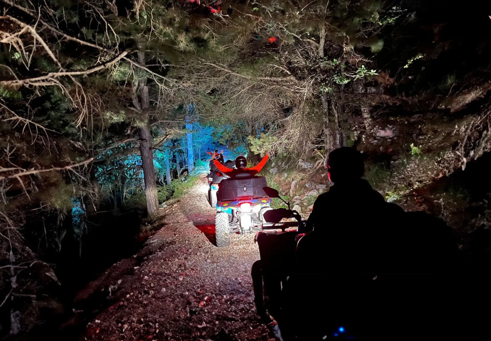

Ночной квадротур
Днём слишком жарко? Не боитесь темноты? Тогда ночной тур для вас.
Наши ночные туры такие же, как дневные. Выберите нужный тур ниже и попросите ночной выезд.
Поездка после заката — хороший вариант в жаркие летние дни. Действуют те же правила, экипировка и инструкции по безопасности, что и в дневных турах.

Выберите тур
The Vista ViewЗаряд бодрости. Обзорный тур.около 40 км, 2,5 ч139,99 € за квадроцикл, 2 человекаThe Full SendИсторическая тропа с изюминкой.около 65 км, мин. 4 ч179,99 € за квадроцикл, 2 человекаThe Boka BeyondЭксклюзивный вариант.около 80 км, мин. 5 ч229,99 € за квадроцикл, 2 человекаBig Boyz TourВсе туры в одном большом туре.100+ км, без ограничения по времениот 299,99 € за квадроцикл, 2 человека
Фото и видео
{kind=link}
{kind=link}
Полезно знать
- Водитель: от 21 года и обязательны действующие водительские права.
- Пассажир: от 12 лет. Дети могут ехать пассажирами.
- Экипировка: шлем и защитная экипировка входят в стоимость.
- Вес: ограничений по весу нет.
- Бронирование: мы работаем по предварительной записи. Особых условий бронирования нет, просто свяжитесь с нами.
- Плохая погода: по договорённости с вами тур можно заблаговременно отменить.
- Трансфер: для некоторых туров есть возможность трансфера. Спросите нас при бронировании.